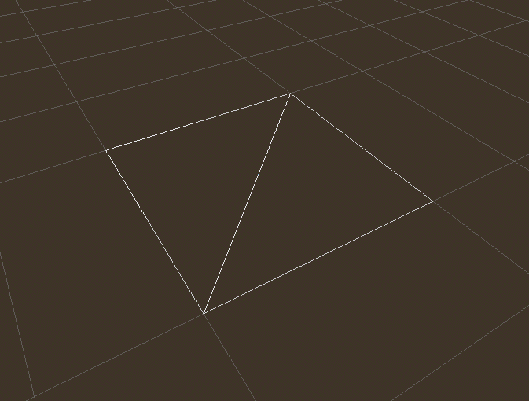
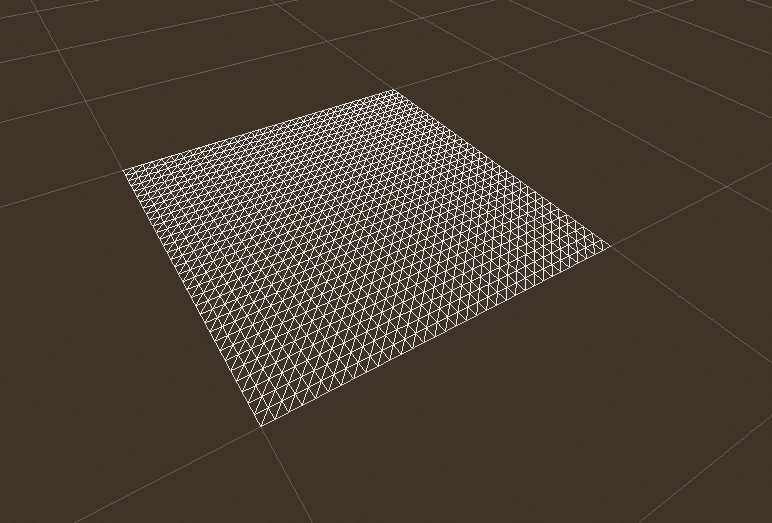
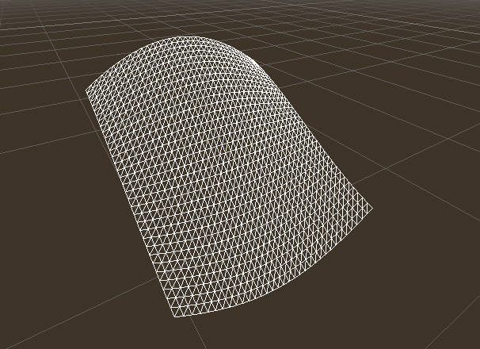
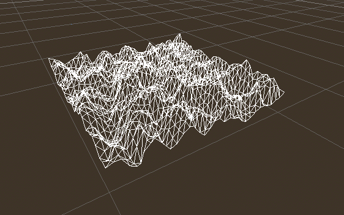
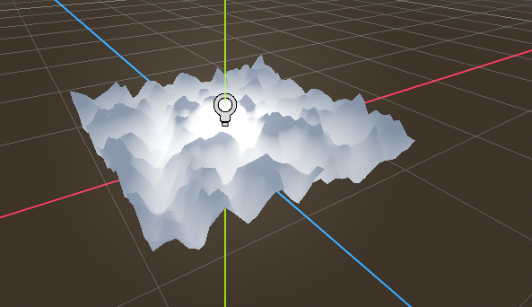
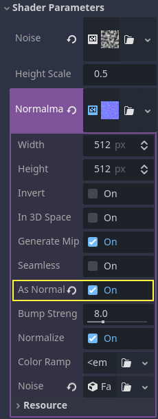
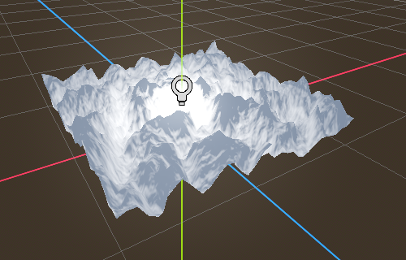
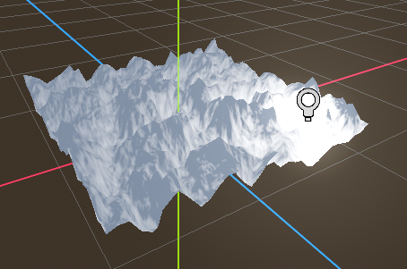

Shader 3D đầu tiên của bạn
Bạn đã quyết định bắt đầu viết Spatial shader tùy chỉnh của riêng mình. Có thể bạn đã thấy một thủ thuật hay trên mạng được làm bằng shader, hoặc bạn nhận thấy StandardMaterial3D chưa đáp ứng hết nhu cầu của mình. Dù thế nào, bạn đã quyết định tự viết và giờ cần tìm hiểu nên bắt đầu từ đâu.
Bài hướng dẫn này sẽ giải thích cách viết Spatial shader và sẽ đề cập đến nhiều chủ đề hơn bài hướng dẫn CanvasItem.
Spatial shader có nhiều chức năng dựng sẵn hơn shader CanvasItem. Kỳ vọng đối với spatial shader là Godot đã cung cấp sẵn chức năng cho các trường hợp sử dụng phổ biến, và tất cả những gì người dùng cần làm trong shader là đặt các tham số phù hợp. Điều này đặc biệt đúng với quy trình làm việc PBR (physically based rendering – kết xuất dựa trên vật lý).
Đây là bài hướng dẫn gồm hai phần. Trong phần đầu tiên này, chúng ta sẽ tạo địa hình bằng cách dịch chuyển đỉnh dựa trên heightmap trong hàm vertex. Trong phần thứ hai, chúng ta sẽ áp dụng các khái niệm từ bài hướng dẫn này và thiết lập material tùy chỉnh trong fragment shader bằng cách viết một shader nước biển.
Ghi chú
Bài hướng dẫn này giả định bạn có một số kiến thức shader cơ bản như các kiểu (vec2, float, sampler2D) và hàm. Nếu bạn chưa thoải mái với các khái niệm này, tốt nhất hãy tìm hiểu nhẹ nhàng từ The Book of Shaders trước khi hoàn thành bài hướng dẫn này.
Gán material ở đâu
Trong 3D, các đối tượng được vẽ bằng Mesh. Mesh là một loại resource lưu trữ hình học (hình dạng của đối tượng) và material (màu sắc và cách đối tượng phản ứng với ánh sáng) trong các đơn vị gọi là "surface". Một Mesh có thể có nhiều surface, hoặc chỉ một. Thông thường, bạn sẽ import mesh từ một chương trình khác (ví dụ Blender). Nhưng Godot cũng có một vài PrimitiveMesh cho phép bạn thêm hình học cơ bản vào scene mà không cần import Mesh.
Có nhiều loại node bạn có thể dùng để vẽ mesh. Loại chính là MeshInstance3D, nhưng bạn cũng có thể dùng GPUParticles3D, MultiMesh (với một MultiMeshInstance3D), hoặc các loại khác.
Thông thường, một material được gắn với một surface nhất định trong mesh, nhưng một số node, như MeshInstance3D, cho phép bạn ghi đè material cho một surface cụ thể, hoặc cho tất cả các surface.
Nếu bạn đặt material trên chính surface hoặc mesh, thì tất cả các MeshInstance3D dùng chung mesh đó sẽ dùng chung material đó. Tuy nhiên, nếu bạn muốn tái sử dụng cùng một mesh cho nhiều mesh instance nhưng mỗi instance có material khác nhau, bạn nên đặt material trên MeshInstance3D.
Trong bài hướng dẫn này, chúng ta sẽ đặt material trên chính mesh thay vì tận dụng khả năng ghi đè material của MeshInstance3D.
Thiết lập
Thêm một node MeshInstance3D mới vào scene của bạn.
Trong tab inspector, đặt thuộc tính Mesh của MeshInstance3D thành một resource PlaneMesh mới bằng cách nhấp vào <empty> và chọn New PlaneMesh. Sau đó mở rộng resource bằng cách nhấp vào hình ảnh mặt phẳng xuất hiện.
Thao tác này thêm một mặt phẳng vào scene của chúng ta.
Sau đó, trong viewport, nhấp vào nút Perspective ở góc trên bên trái. Trong menu xuất hiện, chọn Display Wireframe.
Điều này cho phép bạn thấy các tam giác tạo nên mặt phẳng.

Giờ hãy đặt Subdivide Width và Subdivide Depth của PlaneMesh thành 32.

Bạn có thể thấy giờ đây có nhiều tam giác hơn trong MeshInstance3D. Điều này cho chúng ta nhiều đỉnh hơn để làm việc và nhờ đó có thể thêm nhiều chi tiết hơn.

PrimitiveMesh, như PlaneMesh, chỉ có một surface, nên thay vì một mảng material thì chỉ có một. Đặt Material thành một ShaderMaterial mới, sau đó mở rộng material bằng cách nhấp vào hình cầu xuất hiện.
Ghi chú
Các material kế thừa từ resource class_Material, chẳng hạn như class_StandardMaterial3D và class_ParticleProcessMaterial, có thể được chuyển đổi thành class_ShaderMaterial và các thuộc tính hiện có của chúng sẽ được chuyển thành một shader văn bản đi kèm. Để làm vậy, nhấp chuột phải vào material trong FileSystem dock và chọn Convert to ShaderMaterial. Bạn cũng có thể làm vậy bằng cách nhấp chuột phải vào bất kỳ thuộc tính nào chứa tham chiếu đến material trong inspector.
Giờ hãy đặt Shader của material thành một Shader mới bằng cách nhấp vào <empty> và chọn New Shader.... Giữ nguyên cài đặt mặc định, đặt tên cho shader và nhấp Create.
Nhấp vào shader trong inspector, và trình chỉnh sửa shader sẽ hiện lên. Bạn đã sẵn sàng bắt đầu viết Spatial shader đầu tiên!
Phép màu của shader

Shader mới đã được tạo sẵn với biến shader_type, hàm vertex() và hàm fragment(). Điều đầu tiên shader Godot cần là khai báo loại shader. Trong trường hợp này, shader_type được đặt thành spatial vì đây là spatial shader.
shader_type spatial;
Hàm vertex() xác định vị trí các đỉnh của MeshInstance3D xuất hiện trong scene cuối cùng. Chúng ta sẽ dùng nó để dịch chuyển độ cao của mỗi đỉnh và khiến mặt phẳng phẳng của chúng ta trông giống một địa hình nhỏ.
Khi không có gì trong hàm vertex(), Godot sẽ dùng vertex shader mặc định. Chúng ta có thể bắt đầu thay đổi bằng cách thêm một dòng duy nhất:
void vertex() {
VERTEX.y += cos(VERTEX.x) * sin(VERTEX.z);
}
Khi thêm dòng này, bạn sẽ nhận được hình ảnh giống như hình dưới đây.

Được rồi, hãy phân tích điều này. Giá trị y của VERTEX đang được tăng lên. Và chúng ta truyền các thành phần x và z của VERTEX làm đối số cho cos() và sin(); điều đó tạo ra dạng sóng dọc theo trục x và z.
Điều chúng ta muốn đạt được là vẻ ngoài của những ngọn đồi nhỏ; xét cho cùng, cos() và sin() đã trông khá giống những ngọn đồi. Chúng ta làm điều này bằng cách co giãn đầu vào của các hàm cos() và sin().
void vertex() {
VERTEX.y += cos(VERTEX.x * 4.0) * sin(VERTEX.z * 4.0);
}

Trông đã đẹp hơn, nhưng vẫn quá nhọn và lặp lại, hãy làm cho nó thú vị hơn một chút.
Heightmap nhiễu
Nhiễu (noise) là một công cụ rất phổ biến để giả lập vẻ ngoài của địa hình. Hãy nghĩ về nó giống như hàm cosin với những ngọn đồi lặp lại, ngoại trừ việc với nhiễu, mỗi ngọn đồi có độ cao khác nhau.
Godot cung cấp resource NoiseTexture2D để tạo texture nhiễu có thể truy cập từ shader.
Để truy cập một texture trong shader, hãy thêm code sau gần đầu shader, bên ngoài hàm vertex().
uniform sampler2D noise;
Điều này cho phép bạn gửi một texture nhiễu vào shader. Giờ hãy nhìn vào inspector bên dưới material của bạn. Bạn sẽ thấy một mục tên là Shader Parameters. Nếu mở nó ra, bạn sẽ thấy một tham số tên là "Noise".
Đặt tham số Noise này thành một NoiseTexture2D mới. Sau đó trong NoiseTexture2D, đặt thuộc tính Noise của nó thành một FastNoiseLite mới. Lớp FastNoiseLite được NoiseTexture2D dùng để tạo heightmap.
Sau khi thiết lập xong, nó sẽ trông như thế này.

Giờ hãy truy cập texture nhiễu bằng hàm texture():
void vertex() {
float height = texture(noise, VERTEX.xz / 2.0 + 0.5).x;
VERTEX.y += height;
}
texture() nhận một texture làm đối số thứ nhất và một vec2 cho vị trí trên texture làm đối số thứ hai. Chúng ta dùng các kênh x và z của VERTEX để xác định vị trí cần tra cứu trên texture.
Vì tọa độ của PlaneMesh nằm trong khoảng [-1.0, 1.0] (với kích thước 2.0), còn tọa độ texture nằm trong khoảng [0.0, 1.0], để ánh xạ lại tọa độ, chúng ta chia cho kích thước của PlaneMesh là 2.0 và cộng thêm 0.5 .
texture() trả về một vec4 gồm các kênh r, g, b, a tại vị trí đó. Vì texture nhiễu là thang xám, tất cả các giá trị đều giống nhau, nên chúng ta có thể dùng bất kỳ kênh nào làm độ cao. Trong trường hợp này, chúng ta sẽ dùng kênh r, hay x.
Ghi chú
xyzw giống với rgba trong GLSL, nên thay vì texture().x ở trên, chúng ta có thể dùng texture().r. Xem tài liệu OpenGL để biết thêm chi tiết.
Với code này, bạn có thể thấy texture tạo ra những ngọn đồi trông ngẫu nhiên.

Hiện tại nó quá nhọn, chúng ta muốn làm mềm các ngọn đồi một chút. Để làm vậy, chúng ta sẽ dùng một uniform. Bạn đã dùng một uniform ở trên để truyền texture nhiễu vào, giờ hãy tìm hiểu cách chúng hoạt động.
Uniform
Biến uniform cho phép bạn truyền dữ liệu từ game vào shader. Chúng rất hữu ích để điều khiển hiệu ứng shader. Uniform có thể là gần như bất kỳ kiểu dữ liệu nào dùng được trong shader. Để dùng uniform, bạn khai báo nó trong Shader bằng từ khóa uniform.
Hãy tạo một uniform thay đổi độ cao của địa hình.
uniform float height_scale = 0.5;
Godot cho phép bạn khởi tạo uniform với một giá trị; ở đây, height_scale được đặt thành 0.5. Bạn có thể đặt uniform từ GDScript bằng cách gọi hàm set_shader_parameter() trên material tương ứng với shader. Giá trị truyền từ GDScript được ưu tiên hơn giá trị dùng để khởi tạo nó trong shader.
# called from the MeshInstance3D
mesh.material.set_shader_parameter("height_scale", 0.5)
Ghi chú
Việc thay đổi uniform trong các node dựa trên Spatial khác với các node dựa trên CanvasItem. Ở đây, chúng ta đặt material bên trong resource PlaneMesh. Trong các resource mesh khác, bạn có thể cần truy cập material trước bằng cách gọi surface_get_material(). Còn trong MeshInstance3D, bạn sẽ truy cập material bằng get_surface_material() hoặc material_override.
Hãy nhớ rằng chuỗi truyền vào set_shader_parameter() phải khớp với tên biến uniform trong shader. Bạn có thể dùng biến uniform ở bất kỳ đâu bên trong shader. Ở đây, chúng ta sẽ dùng nó để đặt giá trị độ cao thay vì nhân tùy ý với 0.5.
VERTEX.y += height * height_scale;
Giờ nó trông đẹp hơn nhiều.

Dùng uniform, chúng ta thậm chí có thể thay đổi giá trị mỗi frame để tạo hoạt ảnh cho độ cao của địa hình. Kết hợp với Tween, điều này đặc biệt hữu ích cho hoạt ảnh.
Tương tác với ánh sáng
Đầu tiên, tắt wireframe. Để làm vậy, hãy mở lại menu Perspective ở góc trên bên trái của viewport và chọn Display Normal. Ngoài ra, trên thanh công cụ scene 3D, hãy tắt ánh nắng xem trước (preview sunlight).

Hãy để ý màu của mesh trở nên phẳng lì. Đó là do chiếu sáng trên nó phẳng. Hãy thêm một nguồn sáng!
Đầu tiên, chúng ta sẽ thêm một OmniLight3D vào scene và kéo nó lên để nó nằm phía trên địa hình.

Bạn có thể thấy ánh sáng tác động lên địa hình, nhưng trông có vẻ kỳ lạ. Vấn đề là ánh sáng đang tác động lên địa hình như thể nó là một mặt phẳng phẳng. Đó là vì light shader dùng pháp tuyến từ Mesh để tính ánh sáng.
Pháp tuyến được lưu trong Mesh, nhưng chúng ta đang thay đổi hình dạng Mesh trong shader, nên pháp tuyến không còn đúng nữa. Để khắc phục, chúng ta có thể tính lại pháp tuyến trong shader hoặc dùng một normal texture tương ứng với nhiễu của chúng ta. Godot giúp cả hai cách đều dễ dàng.
Bạn có thể tự tính pháp tuyến mới trong hàm vertex rồi chỉ cần đặt NORMAL. Khi đã đặt NORMAL, Godot sẽ thực hiện mọi phép tính chiếu sáng phức tạp cho chúng ta. Chúng ta sẽ đề cập phương pháp này trong phần tiếp theo của bài hướng dẫn; còn bây giờ, chúng ta sẽ đọc pháp tuyến từ một texture.
Thay vào đó, chúng ta sẽ lại dựa vào NoiseTexture để tính pháp tuyến cho chúng ta. Chúng ta làm điều này bằng cách truyền vào một texture nhiễu thứ hai.
uniform sampler2D normalmap;
Đặt uniform texture thứ hai này thành một NoiseTexture2D khác với một FastNoiseLite khác. Nhưng lần này, hãy đánh dấu As Normal Map.

Khi có các normal tương ứng với một vertex cụ thể, ta đặt NORMAL, nhưng nếu bạn có normalmap lấy từ texture, hãy đặt normal bằng NORMAL_MAP trong hàm fragment(). Bằng cách này Godot sẽ tự động xử lý việc bao texture quanh mesh.
Cuối cùng, để đảm bảo ta đọc từ cùng các vị trí trên noise texture và normalmap texture, ta sẽ truyền vị trí VERTEX.xz từ hàm vertex() sang hàm fragment(). Ta làm điều đó bằng một varying.
Phía trên vertex(), định nghĩa một varying vec2 tên là tex_position. Và bên trong hàm vertex(), gán VERTEX.xz cho tex_position.
varying vec2 tex_position;
void vertex() {
tex_position = VERTEX.xz / 2.0 + 0.5;
float height = texture(noise, tex_position).x;
VERTEX.y += height * height_scale;
}
Giờ ta có thể truy cập tex_position từ hàm fragment().
void fragment() {
NORMAL_MAP = texture(normalmap, tex_position).xyz;
}
Khi đã có normal, ánh sáng giờ phản ứng động theo độ cao của mesh.

Ta thậm chí có thể kéo nguồn sáng đi khắp nơi và chiếu sáng sẽ tự động cập nhật.

Code đầy đủ
Đây là code đầy đủ của bài hướng dẫn này. Bạn có thể thấy nó không dài lắm vì Godot đã xử lý hầu hết những phần khó cho bạn.
shader_type spatial;
uniform float height_scale = 0.5;
uniform sampler2D noise;
uniform sampler2D normalmap;
varying vec2 tex_position;
void vertex() {
tex_position = VERTEX.xz / 2.0 + 0.5;
float height = texture(noise, tex_position).x;
VERTEX.y += height * height_scale;
}
void fragment() {
NORMAL_MAP = texture(normalmap, tex_position).xyz;
}
Phần này đến đây là hết. Hy vọng giờ bạn đã hiểu những điều cơ bản về vertex shader trong Godot. Trong phần tiếp theo của bài hướng dẫn, ta sẽ viết một hàm fragment đi kèm hàm vertex này và tìm hiểu một kỹ thuật nâng cao hơn để biến địa hình này thành một đại dương với những con sóng chuyển động.